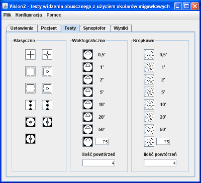

Zakładka "Testy" (rys. 1) podzielona jest na 3 części, w których zgrupowane są przyciski umożliwiające przeprowadzenie odpowiednio testów klasycznych, wektograficznych lub kropkowych. Uruchomienie konkretnego testu następuje po kliknięciu jednej z ikon symbolizujących poszczególne rodzaje testów. Sterowanie programem w czasie wykonywania testu opisane jest w sekcji Sterowanie testami.
Uruchomienie testu klasycznego powoduje jednokrotne wykonanie tego testu. Testy wektograficzne i kropkowe przeprowadzane są domyślnie 4 razy. Wartość tę można zmienić niezależnie dla obu rodzajów testów w polach "ilość powtórzeń".
Testy wektograficzne i kropkowe mierzą kąt widzenia stereoskopowego. Dla ułatwienia predefiniowano 7 wartości: 0,5° 1° 2° 5° 10° 20° i 50° Przycisk położony najniżej w obu grupach testów służy do uruchamiania badania z wartością kąta stereoskopowego podaną przez użytkownika. Domyślnie wpisana jest wartość 75°, ale można wpisać dowolną wartość.
